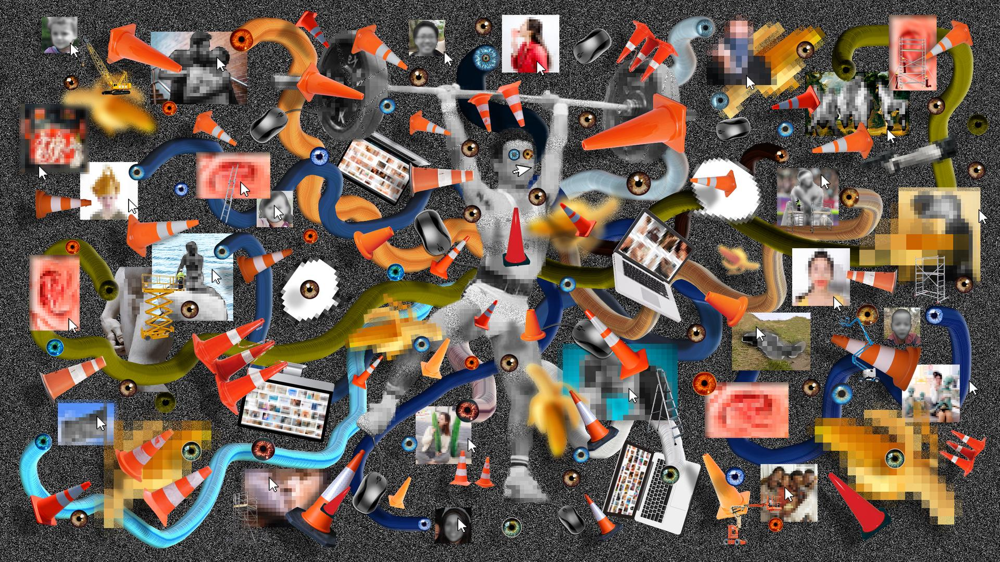
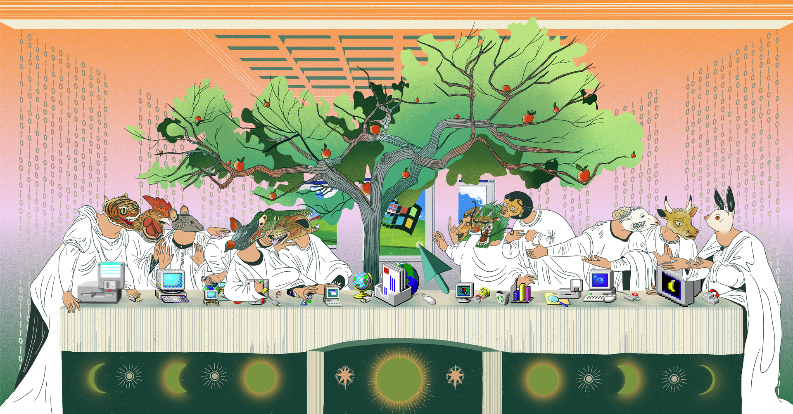

Laurent Smeets en Daan van Wijk
Wat is het
Een digitale assistent is een slimme, geautomatiseerde dienst op basis van AI die via digitale kanalen interactief met gebruikers en/of systemen communiceert. De assistent kan vragen beantwoorden, taken uitvoeren en informatie aanbieden aan mensen binnen (medewerkers) of buiten de organisatie (burgers en bedrijven).
Maart t/m juni
We brachten literatuur, kaders en bestaande praktijk in kaart. De basis onder het raamwerk.
Bronnen, kaders en voorbeelden bij elkaar gebracht. Vaak handwerk achter de schermen.

Eén vaste structuur voor elk domein, elke good practice en elke bron.
0 domeinen. 0 good practices. 0 bronnen.
Kennis opgehaald bij de mensen die het werk elke dag doen.
Alles gestructureerd uitgewerkt in Word, consistent en vergelijkbaar.
Teruggelegd, getoetst en aangescherpt met de experts.
Nu bezig
De fase die nu start. Resultaten toegankelijk maken en de context echt bruikbaar voor mensen.

Colofon